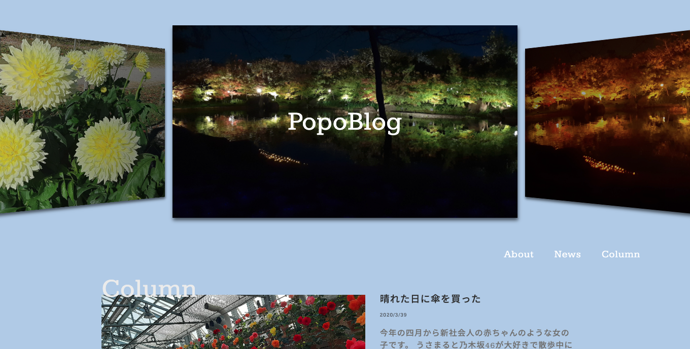
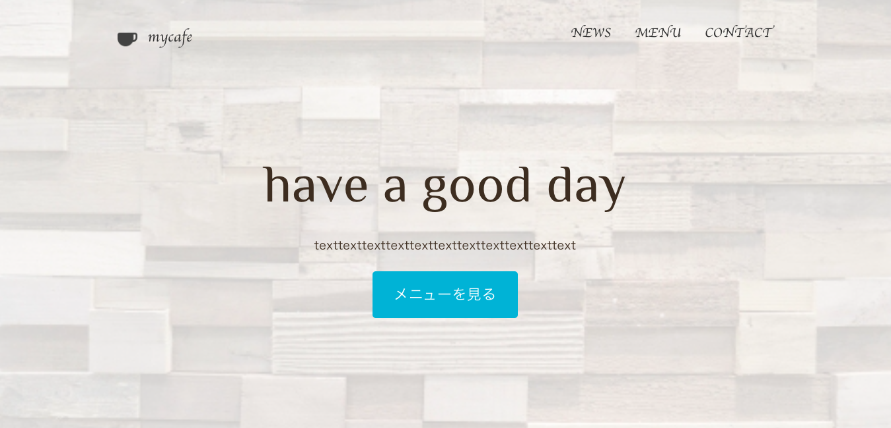
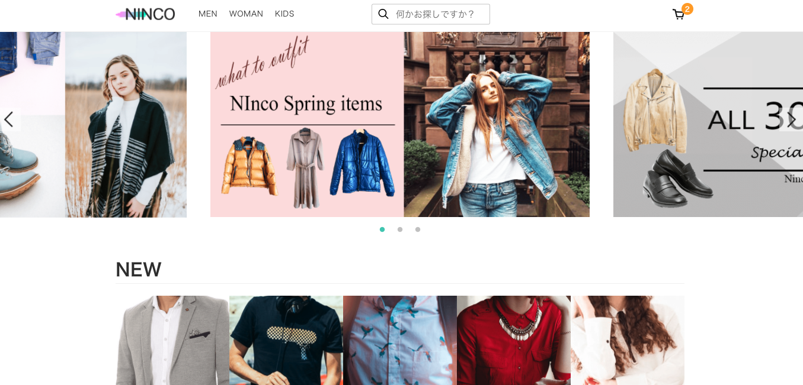
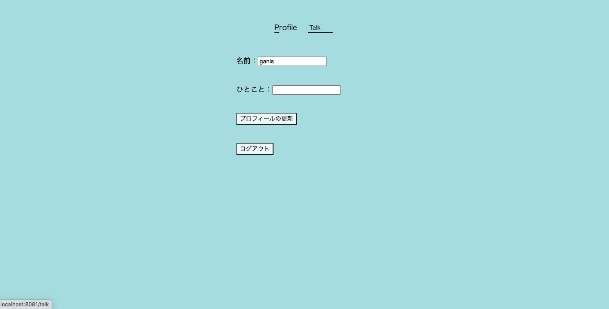

作品

HTML
CSS
JavaScript
自作の模擬ブログを作成しました。こちらはHTML,CSS,JavaScriptを使用して作成したものですが、
作成後簡単なワードプレス化を行い記事一覧からプラグインを利用した、お問い合わせホームの設置までを行いました。

HTML
CSS
メニューからお問い合わせフォームを備えた本格的なカフェの架空サイトです。

HTML
CSS
JavaScript
忍者コードさん 鳳凰の間 模写
jqueryを利用したお気に入り機能の搭載など本格的なECサイトを作成しました。
jqueryを利用したお気に入り機能の搭載など本格的なECサイトを作成しました。

HTML
CSS
Vue.js
firebaseとVueCLIで作成したログイン機能を搭載した掲示板を作成しました。
※リンクは繋がっておりません。
※リンクは繋がっておりません。